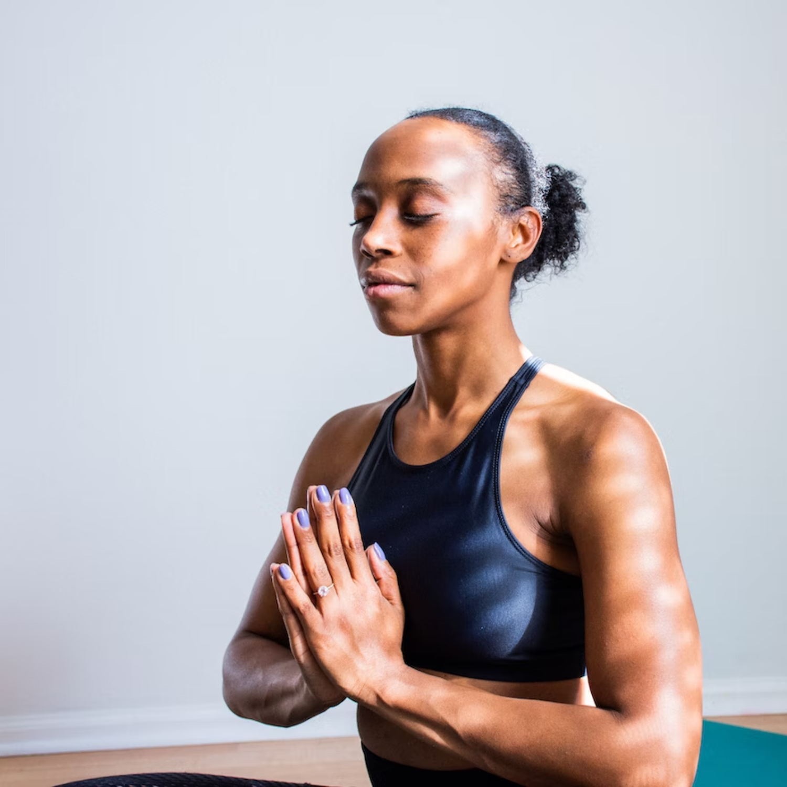
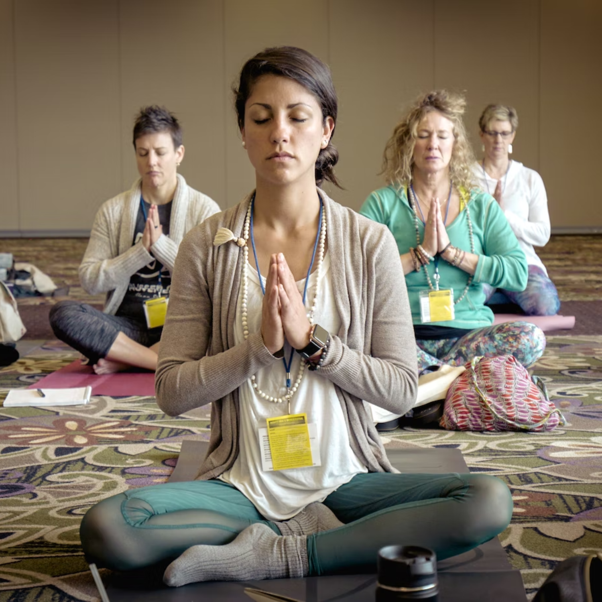

Meditation
Meditating has profound and long-lasting effects on our lives :
• It reduces stress
• Helps us understand our sorrow
• Strengthens our connections
• Sharpens our focus
• Makes us more compassionate toward ourselves
────────────────────────────────────────────────────────
How does one become a meditator?
In mindfulness
meditation, it is
taught to
focus on the breath as
it
comes in and goes out and to be aware of when the mind strays from this activity.
The
muscles of
mindfulness and concentration are strengthened
by the repetition of coming back to the
breath.
When
we focus on our breathing, we are developing the ability to come back
to the present moment
and stay
there on purpose and without judgment.
While the concept of mindfulness is
straightforward,
it
requires patience to practice.
────────────────────────────────────────────────────────
While meditation is not a curative,
it can provide your
life the
much-needed breathing room.
Sometimes,
that is all we require
to make better decisions for our families,
communities, and ourselves. The most crucial
supplies
you
can
include in your
meditation practice are
a little bit of tolerance, some self-kindness, and a pleasant spot to
meditate. We
bring profound
and enduring advantages into our lives when we meditate.
Additionally, you don't need any
additional
equipment or a pricey
membership.
────────────────────────────────────────────────────────

1) Sit down
2) Establish a timeframe
3) Observe your body
4) Sense your breath
5) Recognize when your thoughts have strayed
6) Be patient with your stray thoughts
7) End on a positive note
That is it!
Your mind wanders as you struggle to
focus
your
attention, but
you eventually
pull it back while being as kind as you can
(as many times as you need
to).
────────────────────────────────────────────────────────

• Body Scan Meditation
• Walking Meditation
• Loving-Kindness Meditation
You don't have to battle
distractions during meditation
like a hero killing dragons.
No big issue if your dog or cat enters the room, barks
and meows,
brushes up against you, or lies down on a portion of your
cushion. Let it go.
Interrupting your session
to relate to them is less effective. If that's
what will happen,
look for a means to prevent
them from interfering with your practice.
distractions during meditation